As someone who kinda grew up in the internet, I have my fair shair of fandom experiences. In this fandom section, I will share what I was fixiated with, and perhaps even write an whole essay on a certain topic. Hope you will get to know me and the media more!
I spent too much time online
( Note: The fandoms are ordered from earliest to latest )
A list of my fandoms
- Undertale/Deltarune (semi-active)
- Danganronpa (old)
- Houseki no Kuni (old)
- Cookie Run (semi-active)
- The Promised Neverland (old)
- Dororo (old)
- Your Turn to Die (semi-active)
- Sky : Children of the Light (old)
- Milgram (old)
- Blue Lock (semi-active)
Media I also love
Unusual attachment to fictional characters
I have plenty of characters that I like, maybe because of the design, personalities, story etc. Some characters I like so much I can talk about them for a long time, so I made collapsibles for some charactersacters. Open them if you are interested!
( Note: The characters are ordered from latest to earliest. )
List of my favs
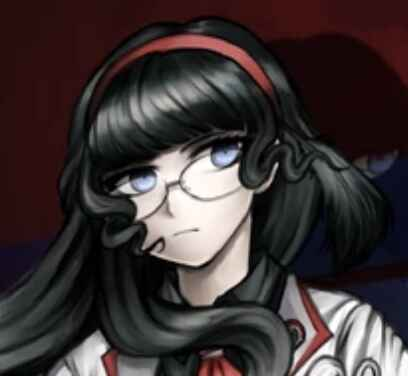
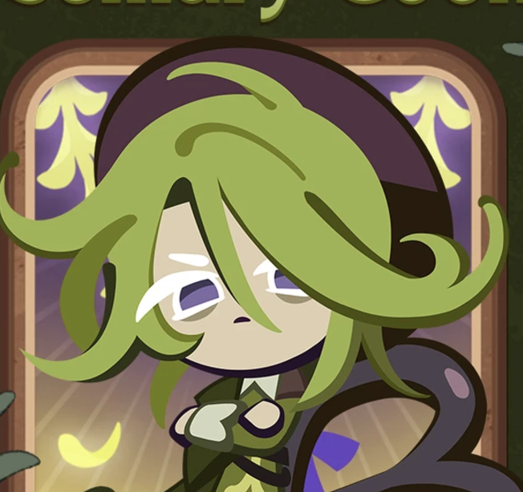
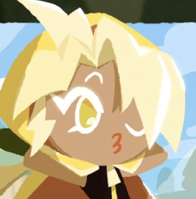
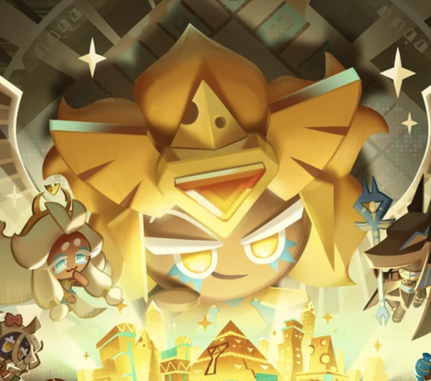
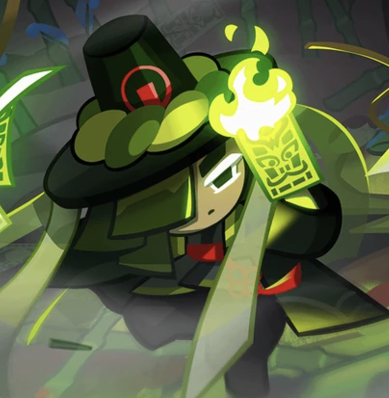
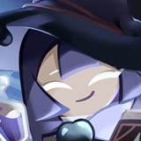
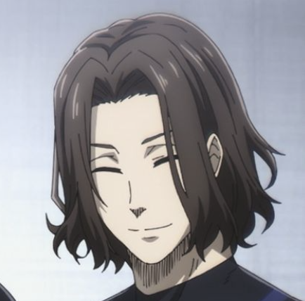
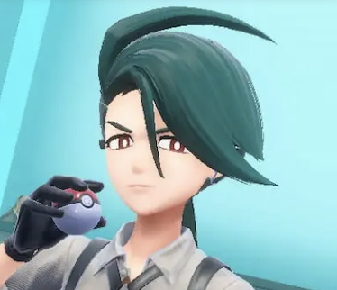
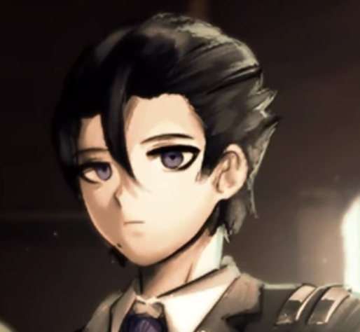
 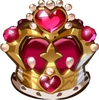
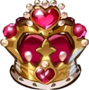
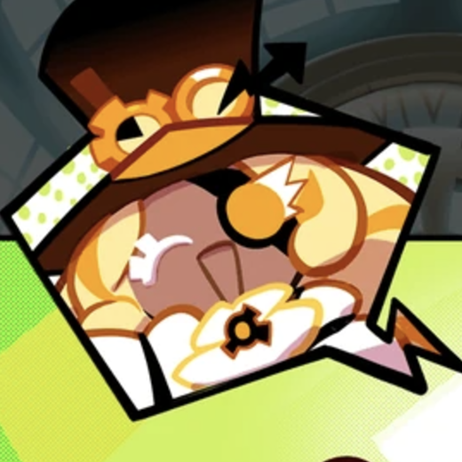
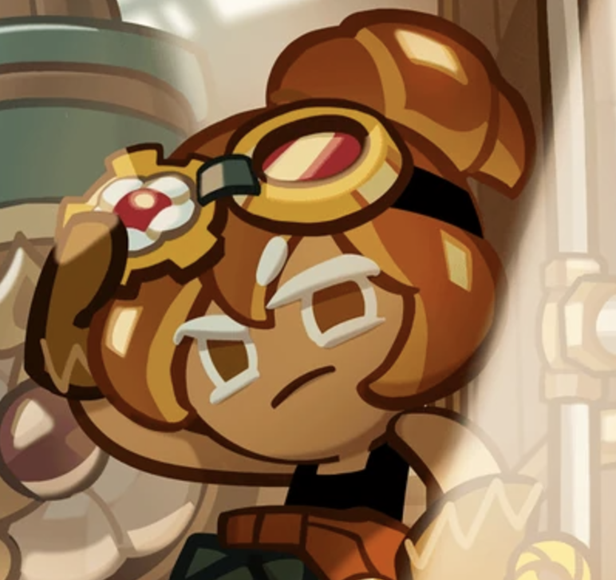
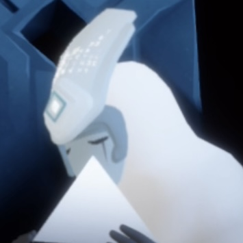
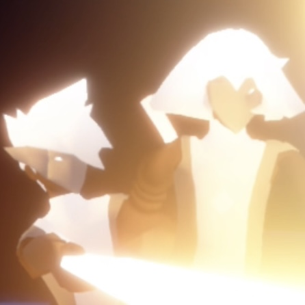
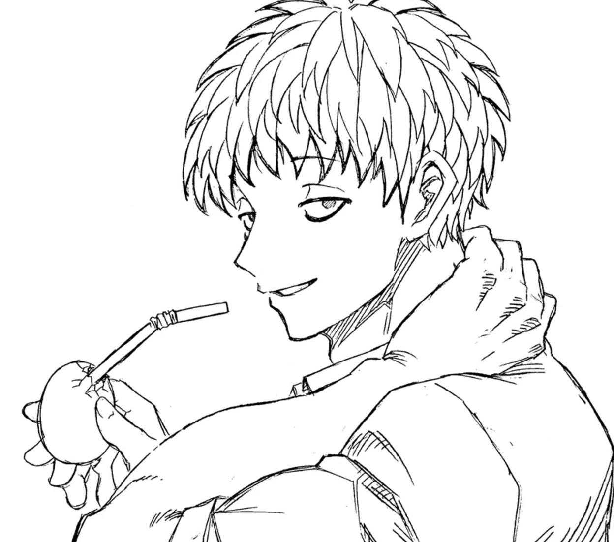
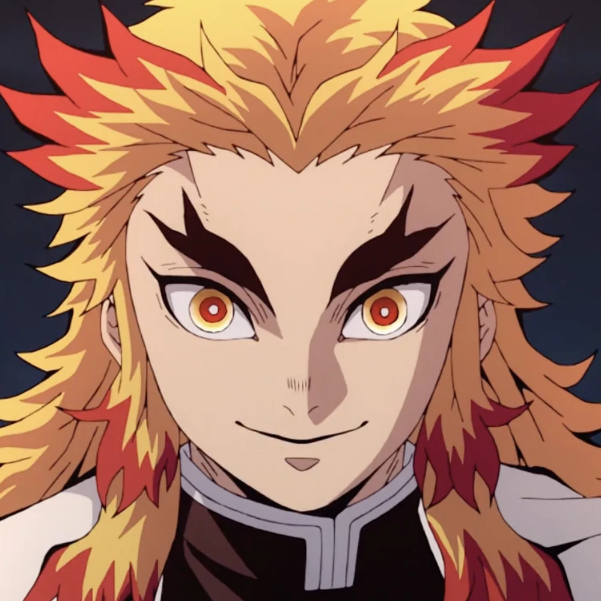
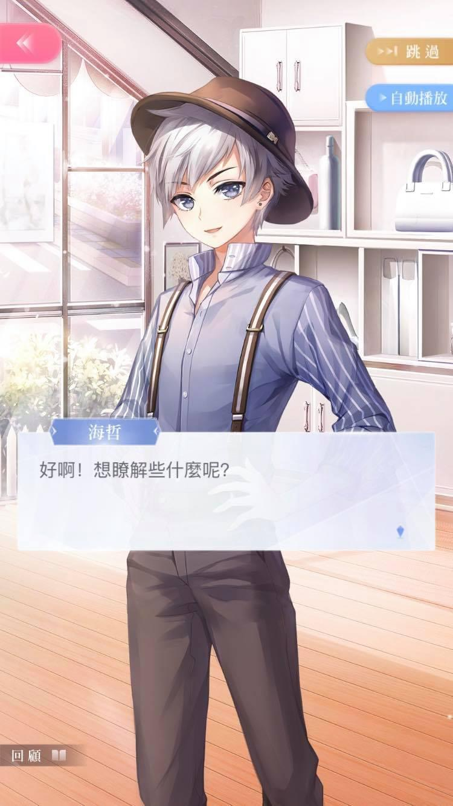
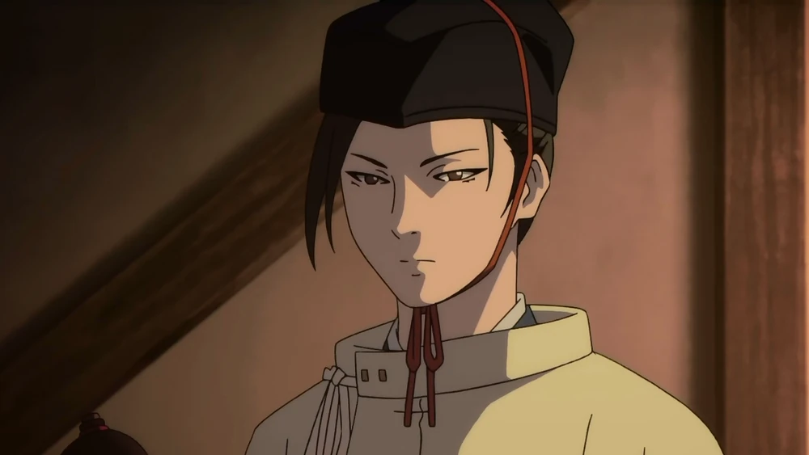
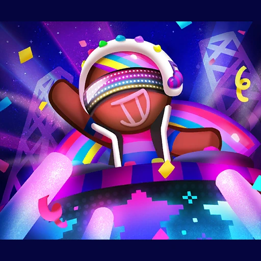
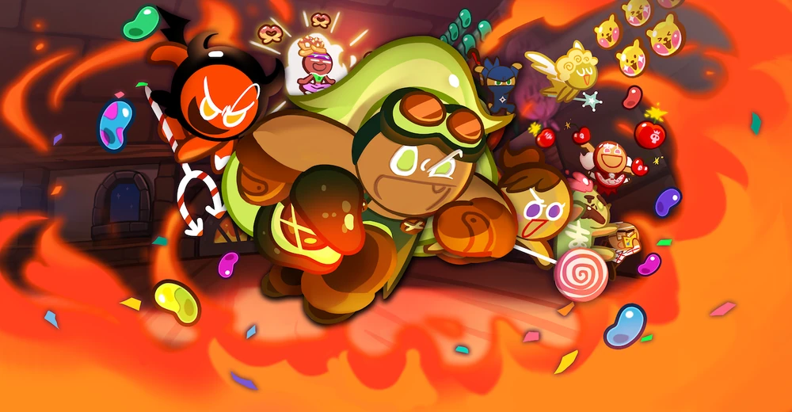
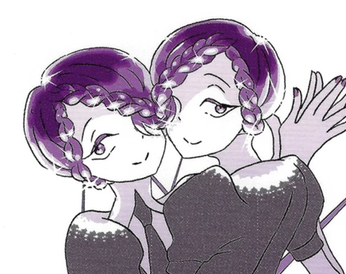
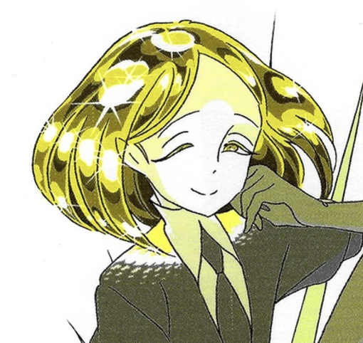
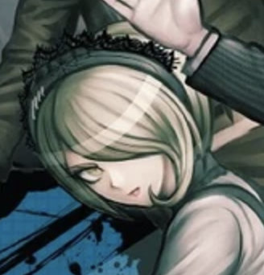
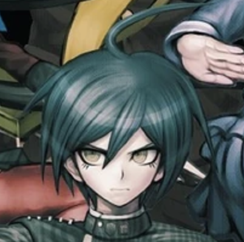
Ships sailed~
I don't often ship characters, honestly I'm surprised to learn that many people have OTPs ever since they were very young. Not sure why but 99% of the time I don't care the romantic potential of characters ( maybe related to the fact I don't like romance plots ).
But over the years, I actually found pairing that I find adorable, either due to cute fan art, or the fact its enemies to lovers (I love enemies to lovers).
( Note: The ships are ordered from earliest to latest )
A list of my OTPs
- DJ Cookie x Lemon Cookie (Cookie Run)
- Vault Elder x Wasteland Elder (Sky: Children of the Light)
- Hollyberry Cookie x Pitaya Cookie (Cookie Run: Kingdom)
- Barou Shouei x Isagi Yoichi (Blue Lock)